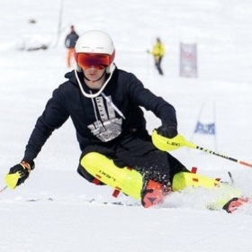

Great Britain · Alpine skiing
Find the line.
Commit to the turn.
Luca Finnis-Bernard is a Great Britain U18 alpine ski racer, BASI Ski UK Level 2 instructor and SnowShepherd Pro Team athlete, racing slalom and giant slalom for Hemel Ski Race Club.
Profile
Racing, coaching
and progression.
Luca is a Great Britain U18 alpine ski racer and BASI Ski UK Level 2 instructor based in the UK, training and racing at The Snow Centre and Snozone, with mountain-racing experience in Tignes.

"Racing, coaching and progression."
He races for Hemel Ski Race Club (HSRC) and represents SnowShepherd, teaching skiing at The Snow Centre in Hemel Hempstead and Knockhatch Adventure Park. His training combines dry-slope and snow-based race preparation in the UK with mountain-racing mileage in Tignes.
Race record
Results.
11 recorded races across slalom and giant slalom, with one win, seven podiums and eleven top-ten finishes — 8 slalom starts and 3 giant slalom starts.
Season 2025/26
Training and activity.
Training includes dry-slope and snow sessions, competition preparation, race technique and mountain experience in Tignes.
Equipment
Current setup.
Progression
The journey so far.
Checkpoints from Luca's racing and coaching progress, built from confirmed race dates and current roles.
Gallery
On the hill.
Photos are read automatically from the photos/ folder in this repository.
Add an image there and it appears here — no code changes required.
Get in touch
Let's talk skiing.
For coaching enquiries, race collaborations or general messages, reach out on social media or send a message below.